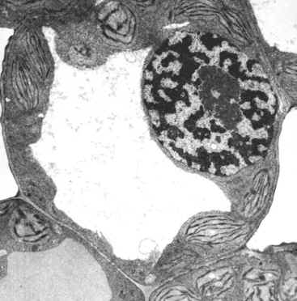

The purpose of the vacuole is for storage. It stores a variety of chemicals including water, starch, fats, oils and defensive chemicals

| This is a transmission electron microscope (TEM) view of grape leaf cell. The TEM shows internal structures of cells. In this image you can see the nucleus (upper right) many chloroplasts and a centrally located vacuole. |
 Return to the cell
Return to the cell